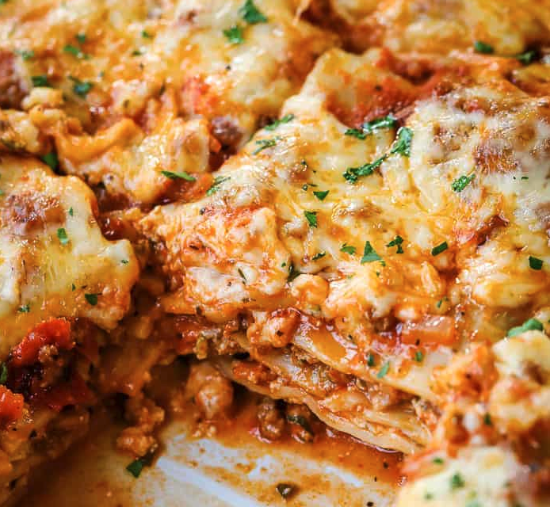

Lasagna

Description
A classic, delicious dinner that every family should have in their recipe rotation. Simple ingredients, and an
ever simpler process to make this amazing at home rendition of a popular dish at many world famous italian
restaurants.
Ingredients
- 12 Lasagna Noodles
- 4 Cups Mozzarella Cheese
- 1/2 Cup Parmesan Cheese
- 1/2lb Lean Ground Beef
- 1/2lb Italian Sausage
- 1 Diced Onion
- 2 Minced Garlic Cloves
- 36oz Pasta Sauce
- 2 Tablespoons Tomato Paste
- 1 Teaspoon Italian Seasoning
- 2 Cups Ricotta Cheese
- 1/4 Cup Chopped Fresh Parsley
- 1 Beaten Egg
Steps
-
Preheat the oven to 350°F. In a large pot of salted water, boil lasagna noodles until al dente according to
package
directions. Drain, rinse under cold water, and set aside.
-
In a large skillet or dutch oven, brown beef, sausage, onion, and garlic over medium-high heat until no pink
remains.
Drain any fat.
-
Stir in the pasta sauce, tomato paste, Italian seasoning, ½ teaspoon of salt, and ¼ teaspoon of black
pepper. Simmer
uncovered over medium heat for 5 minutes or until thickened.
-
In a separate bowl, combine 1 ½ cups mozzarella, ¼ cup parmesan cheese, ricotta, parsley, egg, and ¼
teaspoon salt.
-
Spread 1 cup of the meat sauce in a 9×13 pan or casserole dish. Top it with 3 lasagna noodles. Layer with ⅓
of the
ricotta cheese mixture and 1 cup of meat sauce. Repeat twice more. Finish with 3 noodles topped with
remaining sauce.
-
Cover with foil and bake for 45 minutes.
-
Remove the foil and sprinkle with the remaining 2 ½ cups mozzarella cheese and ¼ cup parmesan cheese. Bake
for an
additional 15 minutes or until browned and bubbly. Broil for 2-3 minutes if desired.
-
Rest for at least 15 minutes before cutting.